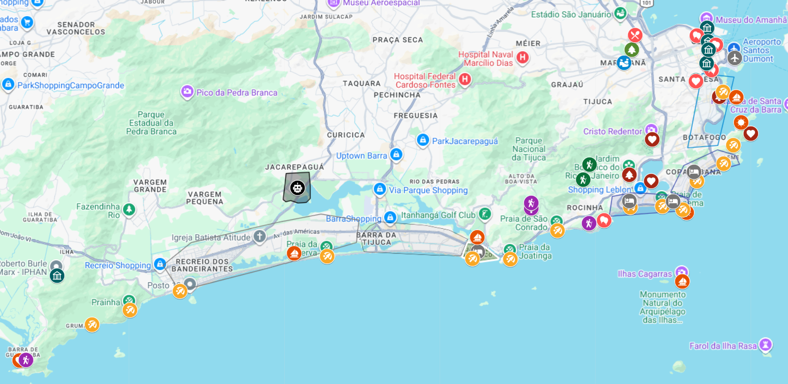
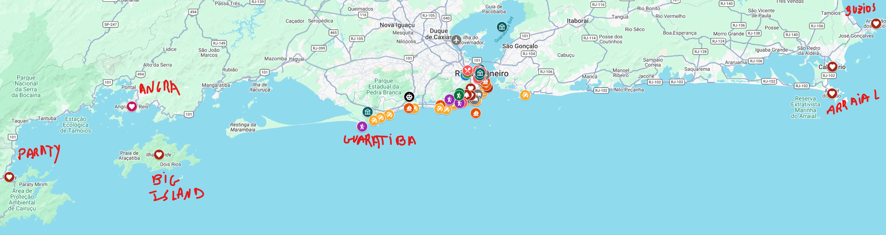
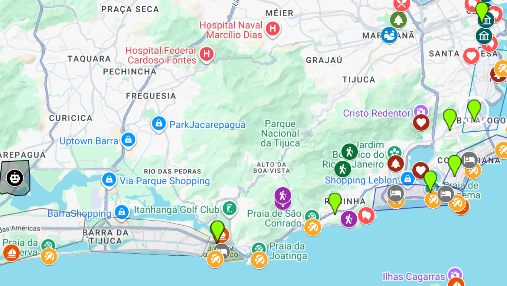
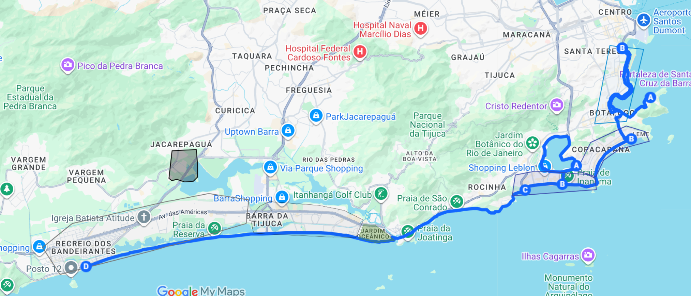
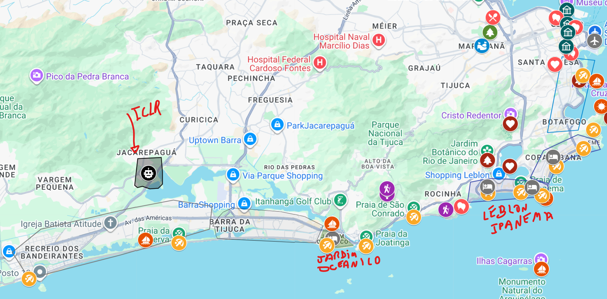

Guidelines Rio de Janeiro
0) City Map Overview
The comments in this section are meant to help you get oriented, decide what to visit, and how long to stay.
Rio City - Metropolitan Area
I've marked major locations in two places:
- This custom map has pins for the conference location, spots worth visiting, the main areas for accommodation, and some cycling routes. Click on the pins for a brief comment.
- This set of bookmarks to use with the Google Maps app.
- It turns out the custom map doesn't integrate with Google Maps navigation. It's still better for visualization though, so I kept it.
- I'll keep adding places as I remember.
The map below shows the metropolitan area and surroundings. The conference is in the "robot" pin.
Comments:
- Note that the major attractions/activities/restaurants are far from the conference venue.
- This is one reason I suggest not staying near it (+ not the safest or most well-developed area)
- The Barra Zone (gray) and the South Zone (blue) is where I'd suggest staying. See "3. Where to Stay" for notes to help decide between them.
- The metropolitan area itself has plenty of natural attractions (hiking, beaches, lagoons, mangroves, islands, boat trips), stunning panoramic views (think rooftop views, but made by nature :), and cultural events (especially samba/funk music open-air and indoor)
- I'd say five days is enough to enjoy a great portion of the city.

Other Parts of the Rio State
However, if you have more time, it's may be worth visiting some farther-out destinations that are absolutely unique and breathtaking. Below is an expanded view with them included.

All these will typically include:
- Boat trips on the open sea, visiting islands, caves, and clifftops; diving (snorkeling or scuba); hiking to secluded beaches and panoramic viewpoints; beach tours; and good restaurants.
- Rich marine life — dolphins, stingrays, starfish, (big) turtles, crabs, lobsters, colorful fish, and shark encounters while diving or on boat trips. Whales sometimes depending on the season.
- Other beach activities: like banana boats, wakeboarding, waterskiing, jet ski, etc.
In order, here is the time you'd roughly need:
- Angra: +1 day.
- Can be combined to a trip to "Guaratiba", which is like 1h by car from the South Zone (30m from Barra).
- Big Island: +3 days
- One of the most beautiful places in Brazil, in my opinion. Rustic vibes. Incredible marine and wildlife that coexist closely with the local community.
- Paraty: +3 or more days.
- One of the most beautiful places in Brazil, in my opinion. Unique colonial architecture. Comfortable town to go with family. Lots of nice restaurants.
- Buzios: +3 days
- ~3-4h from the metropolitan area. Several and distinct beaches. Comfortable town to go with family. Lots of nice restaurants.
- Arraial: +1-2 days.
- Home to some of the most beautiful beaches in the world.
- The richest marine life — it's very common to dive with dolphins and sharks, and whale sightings are possible depending on the season.
- The town itself isn't as well developed as Búzios or Paraty, so there is less reason to stay longer.
For a non-beach trip, there is also Petrópolis (1 day).
- Historic mountain town ~1h from the metropolitan area. Was the summer retreat of Brazil's royal family.
- Cool mountain climate, imperial palaces, museums, and charming streets with cafés and restaurants. Craft beer scene with lots of breweries.
Other parts of Brazil
If you'd like to spend 3+ days, it may be worth visiting other states beyond Rio. Let me know if that's the case and I can suggest more specifics. Some high-level highlights:
Northeast (2+ days) (Bahia, Ceará, Rio Grande do Norte, Pernambuco, Sergipe, Paraíba, etc.):
- Some destinations can be explored well in 1–2 days.
- The food is probably unlike anything you've experienced — and I think it's the best in the world.
- It's also a beach-oriented region, but the geography is quite distinct from Rio, and the beaches are just as beautiful — if not more so.
Fernando de Noronha (4+ days):
- An island off the northeast coast, widely recognized as one of the most beautiful places in the world. Incredible marine and wildlife that coexist closely with the local community.
Iguaçu Falls (1-2 Days)
- One of the largest and most spectacular waterfall systems in the world, located on the border with Argentine.
Bonito (Central-West) (3+ days):
- Known for crystal-clear rivers, cave diving, and some of the best ecotourism in Brazil. A paradise for nature lovers.
Amazon (North) (4+ days):
- Rainforest tours, river cruises, wildlife spotting, and visits to indigenous communities.
- At least 3–4 days, as most jungle lodges and tours require time to reach and are designed for multi-day stays.
São Paulo (1–2 days):
- Neighbor to Rio. It's the 6th largest city in the world by population and the largest in the Americas (including NYC).
- It is ugly visually, but it has an incredible amount of restaurants and activities—really, a lot.
Gramado (Southern Brazil):
- A charming European-style mountain town known for its cool climate, chocolate shops, fondue, and wine culture. A different vibe from the rest of Brazil — feels like a small Alpine village.
- 2–3 days to explore the town + nearby Canela (with its stunning canyon views) + the local wineries.
1) Flying to Rio and Airports
There are two main airports: Galeão (GIG) and Santos Dumont (SDU)
Galeão is the larger and may offer more flight options and/or better prices.
But if you can choose, go with SDU. Two reasons:
2) Transport within the city
For daily errands (groceries, meals, pharmacy):
- In the South Zone neighborhoods, you can do almost everything on foot.
- You may need a car if you're staying closer to the conference area or Barra.
- Also consider: Uber and delivery apps — both are very inexpensive in Brazil.
For longer trips (getting to the conference, visiting landmarks, farther restaurants), my ranking is:
1) Riding Apps
These are substantially less expensive than in the US, and is the better option in many cases. Major companies: Uber, 99Taxi. Both pretty secure.
NOTE: Avoid hailing taxis directly on the street — they're typically more expensive. If a taxi comes through the app (Uber, 99), that's fine, since the price is set by the app.
2) Subway
- Works great, but doesn't cover the conference area.
- May be an option to travel across "Leblon-Ipanema-Copacabana-Flamengo-Centro/Lapa-Maracana". For medium distances, the cost may be similar to Uber.
This is roughly the coverage. Obs.: imperfect; there are many more stations in the RHS of the map. 
3) Cycling / Electric scooter
A great way to take a stroll along the beach and see the major scenic landmarks. They're all connected by bike lanes — see cycle trails here for route options.
Obs.: since the city is tightly integrated with the coastline, cycling can be used to get around too. Just remember that Rio is hot. 
4) Bus
Might be confusing for tourists, and may be very crowded.
I'd suggest buses more for long-range distances (like visiting "Parati"). These cases there are dedicated buses that are very good and comfortable.
5) Car rental
I'm not too familiar with how this works for foreigners. Localiza is the main company.
Just keep in mind that Rio isn't much of a "car city" — many neighborhoods are designed to do things by walking, and scenic spots like the beaches and lagoon are more enjoyable on foot or by bike than by car.
That said, car may be an option if:
- You're staying near the conference area or Barra, which are generally less walkable.
- You want to visit more isolated spots within the metro area (like Prainha, Grumari, or Guaratiba) — though these are also doable and not too costly by Uber.
- You're heading to more distant destinations like Búzios, Angra, or Paraty. Note: transfer options via bus or private car are also available.
3) Where to Stay
Major considerations & Barra vs South Zone (SZ)
The map below is an overview of the conference location and regions to stay.
- Gray = "Barra" zone. Blue = "South Zone".
- "Jardim Oceanico" = very small region that is a middle ground between Barra and South Zone.
The South Zone is the usual choice for tourists, but given the ICLR location, there's a tradeoff between being close to the city's major attractions and activities (South Zone) vs. being close to the conference (Barra Zone). Below are some considerations to help you decide.
The subsections that follow give more details on neighborhoods in each zone once you've decided.

1) Why not stay at the conference's region:
I wouldn't recommend staying in the conference area if you want to experience the city — at least not for your entire stay. If you highly value closeness to the conference, I'd recommend the Barra Zone (more below)
Reasons:
- The region is far and disconnected from the city's major landmarks and activities.
- The area is not very well developed and not the safest
- You'll need a car for everything, even some daily errands
- +: no walking distance to the beach! Practically a sin for someone visiting Rio for just a few days
2) South Zone vs Barra (& Jardim Oceanico)
Distance to the conference (by car):
- South Zone 1 (Ipa, Copa, Leblon): 40~70m.
- Barra: 20~30m.
- South Zone 2 (Botafogo, Flamengo, Gloria): >60~90m.
South Zone is typically the no-brainer choice for tourists.
Pros:
- Closer to major attractions (Sugarloaf, Christ the Redeemer, Lapa, etc.)
- Home to iconic natural landmarks: Copacabana and Ipanema beaches, Rodrigo de Freitas Lagoon, Guanabara Bay, Botanic Garden, etc.
- Very convenient — you can do almost everything within walking distance
- Lots of buzz: restaurants, bars, nightlife, and street life. One of the quintessential Rio experiences is going to the beach and taking a stroll — watching people, street performances, vendors, sports, etc. This is harder to do in Barra, as it's much more deserted.
Cons:
- Hotels may be a bit older and more expensive than in Barra
- Streets can feel busy and crowded. Not enough to keep you up at night, but if you prefer quieter surroundings, this may be a downside.
- 40–60 minutes to the conference by car
Barra da Tijuca is a well-developed neighborhood, but more residential.
Pros:
- 20–30 minutes to the conference by car
- Plenty of good & modern hotels at lower prices
- Many good restaurants and shopping centers
- The beach is beautiful + other nice spots nearby (e.g., Gigoia Island). But you can easily visit these even if you're not staying there.
Cons:
- Requires a car for everything (even breakfast in some cases)
- Far from the major landmarks, lively areas, and nightlife
- Less vibrant than the South Zone: the beach and streets are more deserted, especially at night. There isn't much street life.
The Jardim Oceânico small region in Barra is somewhat of a middle ground:
- Close to the South Zone
- More commerce and walkable options in that part
- The only spot in Barra with subway access (it's the last stop), connecting to major landmarks, Ipanema, Leblon, etc.
Traffic between South Zone and Barra (+ subway)
- Traffic likely won't be a big issue because the usual flow goes in the opposite direction from conference hours — it's congested heading from Barra to the South Zone in the morning and back in the evening, which is the reverse of the conference's commute.
- Option to partially shortcut car traffic: take the subway from the South Zone to Barra - Jardim Oceânico and grab an Uber from there.
Neighborhoods
In order of what I'd suggest.
South Zone: Copacabana
Personally, I think this is the best neighborhood for tourists.
Pros:
- Very lively neighborhood
- Tons of shops — you can find almost anything at any hour within walking distance
- The beach is beautiful, and its boardwalk — a wide, iconic sidewalk running along the shore — is an attraction in itself: street performers, vendors, sports, sand art, locals and tourists mingling, handcraft markets, bars, restaurants. Great for a stroll (it's full of people even like 10PM)
Cons:
- May be a bit too crowded for some people.
- Some buildings are a bit older
South Zone: Ipanema / Leblon
These are the most upscale neighborhoods in the city.
Pros:
- Closer to the major landmarks, and the beaches are beautiful.
- Walking distance to many great restaurants — the best in the city are concentrated in these two neighborhoods
- Vibrant bar scene
- The beach boardwalk is also nice, but not as wide and vibrant as in Copacabana. It also gets more deserted earlier.
Cons:
- More expensive (Leblon is the priciest neighborhood in the city; Ipanema is the second)
- After 9 PM, some areas become a bit deserted and less safe to walk around
Barra Region & Jardim Oceanico
- See "2) South Zone vs Barra (& Jardim Oceanico)" for pros & cons.
- Note: the regions in the direction of the South Zone (and far from the conference), tend to be preferred and more expensive:

"Central Region"
The center

Pros:
- The Centro neighborhood has many buildings with historic colonial architecture (it was once the capital of Brazil, where the Portuguese royal family lived)
- Hosts the most iconic cultural events and activities
- Less expensive.
- Pretty good restaurants too.
- Not so far from the conference (~40m by car).
Cons:
- It's kind of a work district.
- It's quite busy during weekdays, but mostly with people going to their jobs
- Almost everything close in the weekends, and it becomes very desert. You'd need to go to other neighborhoods for some activities or eating.
South Zone: Flamengo / Botafogo / Gloria
- Very nice neighborhoods with a vibe relatively similar to Copacabana.
- The downside is that the beaches are less walkable, and the regions are farther from the conference.
4) Security
The most common concern is petty theft and pickpocketing.
The South Zone tourist areas (Copacabana, Ipanema, Leblon) are generally safe during the day, but the below very much apply — they were written with those areas in mind.
The same goes for the Barra region, with the added caveat that it's much more deserted, which can make things riskier.
Petty theft / pickpocketing
- Avoid keeping expensive items visible or in easy-to-steal situations.
- Some examples:
- If you're walking with your phone in your hand, someone may run by and snatch it. Stay aware of your surroundings and hold it firmly, or just keep it tucked away.
- Someone on a bike may come from behind and yank a necklace from your neck.
- This is especially true on the beach, where thieves expect people to have their phones out, or be more relaxed in general.
- If you're driving, don't use your phone near an open window — a motorcycle can pull up and grab it.
- Pickpocketing can happen in some tourist spots open to the public and on public transport. Stay aware of your surroundings, and consider using a fanny pack or bags with zippers to keep your belongings secure.
- Examples: Lapa, samba events. Less common at restricted entry landmarks like Sugarloaf.
Muggings
- Less common, but they can happen — especially in deserted areas. Avoid empty beaches or streets, particularly after dark.
- Use Uber rather than walking long distances at night.
- If you are confronted, don't resist — hand over what they want. Material things are replaceable.
Favelas
- Some favelas (e.g., Vidigal, Rocinha) are quite welcoming to foreigners — they host shows and events, and visiting can be a great experience. But avoid wandering in on your own; go with an organized tour or a local.
Shootings
- You won't be in a "City of God" scenario — random shootings targeting tourists are extremely rare.
- However, shootings can occur on some expressways that pass near more dangerous communities: Av. Brasil, Linha Amarela (Yellow Line), Linha Vermelha (Red Line).
- There is no need to avoid these roads entirely. Incidents are infrequent, and the chances of being directly affected are very low.
- But it's good to be aware they exist so you don't panic if something comes up, say, on the news.
- In any case, these are unlikely to affect your daily routine:
- The South Zone areas and Barra are far from these expressways.
- If you're commuting from the South Zone to the conference, the most common route is along the coast (via São Conrado), which avoids these roads entirely.
- Most landmarks you'd be probably visiting are far
NOTE: If you're taking a car from the international airport (GIG), the route will probably go through a small portion of Linha Vermelha. If concerned, you can ask your driver to take an alternative route, or fly into Santos Dumont (SDU) instead, which is located in the city center.
5) Websites & Apps: delivery, car rental, shopping
Brazil has its own major apps for several services. Download them.
6) Eating
Rio itself doesn't have strong traditional dishes, but as a major city, it offers plenty of great restaurants spanning both international and Brazilian cuisines.
General notes:
-
Restaurants are much cheaper in Brazil. A top-notch restaurant that would cost $100+ in the US might run you just USD 20–30. A Michelin-starred restaurant will cost around USD 100–250.
-
A common notion is that Brazil's specialty is BBQ, particularly the "all you can eat" churrascarias. This is completely wrong. Brazil's food industry is huge & competitive. This means you can find excellent food from all over the world + Brazilian cuisine that has nothing to do with BBQ.
-
Here are some things to keep in mind:
- There are excellent places for meat, but most of them are not "all you can eat" churrascarias. I'd suggest avoiding those (except the ones I list below).
- Brazil has incredibly refined regional cuisines, especially from the northeast and involving fish & shellfish. I'd strongly recommend trying some.
- International food is excellent and affordable. You can have a fantastic Japanese/Italian/ French/Portuguese/etc meal at a great price. The exceptions are Mexican and Indian, which are harder to find or not as strong.
- Adaptations of international food: Brazilians are very creative, and it may be worth trying local twists on international food, especially: Brazilian sushi, pizza (sweet pizzas, dried meat toppings), and handcrafted gourmet burgers.
- Foreigners usually love the casual bites sold at street stalls and open-air markets. Examples: pão de queijo, coxinha, pastéis, sugarcane juice, açaí, and cassava/codfish fritters, cheese bals, etc. All worth trying.
(TODO: fill with specific restaurants)
Japanese
- Temakeria
- Gurume
- Sushi Leblon
- SDU place (forgot the name)
- Michelin at Copacabana Palace (forgot the name)
Meat
- Sabor Doc
- Cortes
Burguers
Northeast Food
- Centro de Convencoes
Seafood - Shellfish focus
Seafood - Fish focus
Italian
Portuguese
Greek
Pizza
Street Markets
- Feira da Gloria
7) Things to do / Places to visit
!TODO:
- The map has several locations.
- But I'll fill more details here regarding interesting combinations to do in one day
-
- tours that are not easy to infer (like the boat trips)
8) Miscelaneous but useful info
I'll add more as a I remember.
Phones: Police: 190 | Ambulance: 192 | Firefighters: 193
Services are very cheap and high quality
It may be worth taking advantage of things you wouldn't normally do as often in the US, Europe, etc. For example:
- Restaurants — both for everyday meals and top-notch dining
- Food and product delivery
- Uber or 99taxi (don't take raw taxis)
- Tours and excursions
- Medical, dental, and aesthetic procedures (substantially cheaper and often high quality)
Payment methods
- The payment system is highly digital.
- You can pay with your card or contactless payment in most places. Even street vendors typically have card machines.
- You'll be fine with cards/contactless. That said, in exceptional situations there is cash or "Pix".
- "Pix" is an instant bank transfer system with no fees. It's accepted virtually everywhere. There are apps for foreigners to use Pix (like Wallbit or WanderWallet), but not sure how they work.
Hospitals & Urgent Care
Brazil has a public health system that is free for everyone, including foreigners. If you don't have insurance or travel coverage:
- For immediate care, head to a UPA (urgent care unit). Just search "UPA" on Google Maps — they're scattered across the city.
- For more serious cases, go to a public hospital.
- For emergencies, call 192 (SAMU) for an ambulance.
Drinking
- Alcoholic beverages are allowed in public and on the streets -- e.g., you can drink a beer while walking over the beach.
- But laws for drinking & driving are very strict. If you've had anything to drink — even a single beer or a bit of liquor — don't drive. There are checkpoints ("blitzes") on many streets, and the legal tolerance is extremely low.
Chinese companies can operate in Brazil
You can use TikTok or buy products from Xiaomi (use Mercado Livre)
Local Clothes
-
Buy a pair of Havaianas. They cost about $4 and will make your life much easier for walking around the city.
- You can order them for delivery via Mercado Livre, or just buy them on the street — they're sold everywhere.
-
People in Rio dress very casually and don't care much about fancy appearances. It's perfectly normal to walk into a shopping mall in flip-flops, board shorts, and sand still on your feet
If you'd like to buy clothes, consider visiting:
- Osklen — great for everything, but pricier
- Richards — especially for shorts, a bit pricier too
- Hering — good for everyday wear, light and breathable fabrics